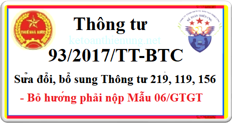

Thông tư 93/2017/TT-BTC ngày 19/9/2017 của Bộ tài chính sửa đổi, bổ sung Thông tư 219/2013/TT-BTC, 119/2014/TT-BTC, 156/2013/TT-BTC. Bỏ không phải nộp Mẫu 06/GTGT để đăng ký pp khấu trừ.
|
BỘ TÀI CHÍNH ------- |
CỘNG HÒA XÃ HỘI CHỦ NGHĨA VIỆT NAM Độc lập - Tự do - Hạnh phúc --------------- |
| Số: 93/2017/TT-BTC | Hà Nội, ngày 19 tháng 9 năm 2017 |
THÔNG TƯ
SỬA ĐỔI, BỔ SUNG KHOẢN 3, KHOẢN 4 ĐIỀU 12 THÔNG TƯ SỐ 219/2013/TT-BTC NGÀY 31/12/2013 (ĐÃ ĐƯỢC SỬA ĐỔI, BỔ SUNG TẠI THÔNG TƯ SỐ 119/2014/TT-BTC NGÀY 25/8/2014) VÀ BÃI BỎ KHOẢN 7 ĐIỀU 11 THÔNG TƯ SỐ 156/2013/TT-BTC NGÀY 06/11/2013 CỦA BỘ TÀI CHÍNH
Căn cứ Luật Quản lý thuế số 78/2006/QH11 và Luật số 21/2012/QH13 sửa đổi, bổ sung một số điều của Luật Quản lý thuế;Căn cứ Luật thuế giá trị gia tăng số 13/2008/QH12 và Luật số 31/2013/QH13 sửa đổi, bổ sung một số điều của Luật thuế giá trị gia tăng;
Căn cứ Nghị định số 209/2013/NĐ-CP ngày 18 tháng 12 năm 2013 của Chính phủ quy định chi tiết và hướng dẫn thi hành một số điều Luật thuế giá trị gia tăng; Nghị định số 91/2014/NĐ-CP ngày 01 tháng 10 năm 2014 của Chính phủ về việc sửa đổi, bổ sung một số điều tại các Nghị định quy định về thuế;
Căn cứ Nghị định số 83/2013/NĐ-CP ngày 22 tháng 7 năm 2013 của Chính phủ quy định chi tiết thi hành một số điều của Luật Quản lý thuế và Luật sửa đổi, bổ sung một số điều của Luật Quản lý thuế;
Căn cứ Nghị định số 12/2015/NĐ-CP ngày 12 tháng 2 năm 2015 của Chính phủ quy định chi tiết thi hành Luật sửa đổi, bổ sung một số điều của các Luật về thuế và sửa đổi, bổ sung một số điều của các Nghị định về thuế;
Căn cứ Nghị định số 87/2017/NĐ-CP ngày 26 tháng 7 năm 2017 của Chính phủ quy định chức năng, nhiệm vụ, quyền hạn và cơ cấu tổ chức của Bộ Tài chính;
Theo đề nghị của Tổng cục trưởng Tổng cục Thuế,
Bộ trưởng Bộ Tài chính ban hành Thông tư sửa đổi, bổ sung Khoản 3, Khoản 4 Điều 12 Thông tư số 219/2013/TT-BTC ngày 31/12/2013 (đã được sửa đổi, bổ sung tại Thông tư số 119/2014/TT-BTC ngày 25/8/2014) và bãi bỏ Khoản 7 Điều 11 Thông tư số 156/2013/TT-BTC ngày 6/11/2013 của Bộ Tài chính như sau:
Điều 1. Sửa đổi, bổ sung Khoản 3, Khoản 4 Điều 12 Thông tư số 219/2013/TT-BTC ngày 31/12/2013 của Bộ Tài chính (đã được sửa đổi, bổ sung tại Thông tư số 119/2014/TT-BTC ngày 25/8/2014 của Bộ Tài chính) như sau:
1. Bỏ các khổ 1, 2, 3, 4, 5 sau điểm đ Khoản 3 Điều 12 (đã được sửa đổi, bổ sung tại Thông tư số 119/2014/TT-BTC ngày 25/8/2014 của Bộ Tài chính) và thay bằng nội dung như sau:
Phương pháp tính thuế của cơ sở kinh doanh xác định theo Hồ sơ khai thuế giá trị gia tăng hướng dẫn tại Điều 11 Thông tư số 156/2013/TT-BTC ngày 06/11/2013 của Bộ Tài chính (đã được sửa đổi, bổ sung tại Điều 1 Thông tư số 119/2014/TT-BTC ngày 25/8/2014 và Điều 2 Thông tư số 26/2015/TT-BTC ngày 27/2/2015 của Bộ Tài chính).
2. Bỏ điểm d Khoản 4 Điều 12 (đã được sửa đổi, bổ sung tại Thông tư số 119/2014/TT-BTC ngày 25/8/2014 của Bộ Tài chính).
Điều 2. Bỏ Khoản 7 Điều 11 Thông tư số 156/2013/TT-BTC ngày 06/11/2013 của Bộ Tài chính hướng dẫn thi hành một số điều của Luật Quản lý thuế, Luật sửa đổi, bổ sung một số điều của Luật Quản lý thuế và Nghị định số 83/2013/NĐ-CP ngày 22/7/2013 của Chính phủ.
Điều 3. Hiệu lực thi hành
Thông tư này có hiệu lực thi hành kể từ ngày 05 tháng 11 năm 2017.
Trong quá trình thực hiện nếu có vướng mắc, đề nghị các tổ chức, cá nhân phản ánh kịp thời về Bộ Tài chính để nghiên cứu giải quyết./.
|
Nơi nhận: - Văn phòng Trung ương và các Ban của Đảng; - Văn phòng Quốc hội; - Văn phòng Chủ tịch nước; - Văn phòng Tổng Bí thư; - Viện Kiểm sát nhân dân tối cao; - Tòa án nhân dân tối cao; - Kiểm toán nhà nước; - Các Bộ, cơ quan ngang Bộ, cơ quan thuộc Chính phủ, - Cơ quan Trung ương của các đoàn thể; - Hội đồng nhân dân, Ủy ban nhân dân, Sở Tài chính, Cục Thuế, Kho bạc nhà nước các tỉnh, thành phố trực thuộc Trung ương; - Công báo; - Cục Kiểm tra văn bản (Bộ Tư pháp); - Website Chính phủ; - Website Bộ Tài chính; Website Tổng cục Thuế; - Các đơn vị thuộc Bộ Tài chính; - Lưu: VT, TCT (VT, CS). |
KT. BỘ TRƯỞNG THỨ TRƯỞNG Đỗ Hoàng Anh Tuấn |
---------------------------------------
